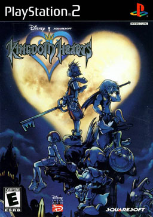

kingdom Hearts
I am a great fan of Final Fantasy, so when I learned about they will mix the universe of Final Fantasy and the one of Disney, I thought: "this will never work, it's stupid". BUT, I am curious, I decided to give it a chance and within 5 days, I finished it, I loved it. The gameplay was classic and original in the same time. The scenario was interesting enough, and less complicated that the rest of the saga. And what a pleasure to revisit the Disney movies as one of the main characters.